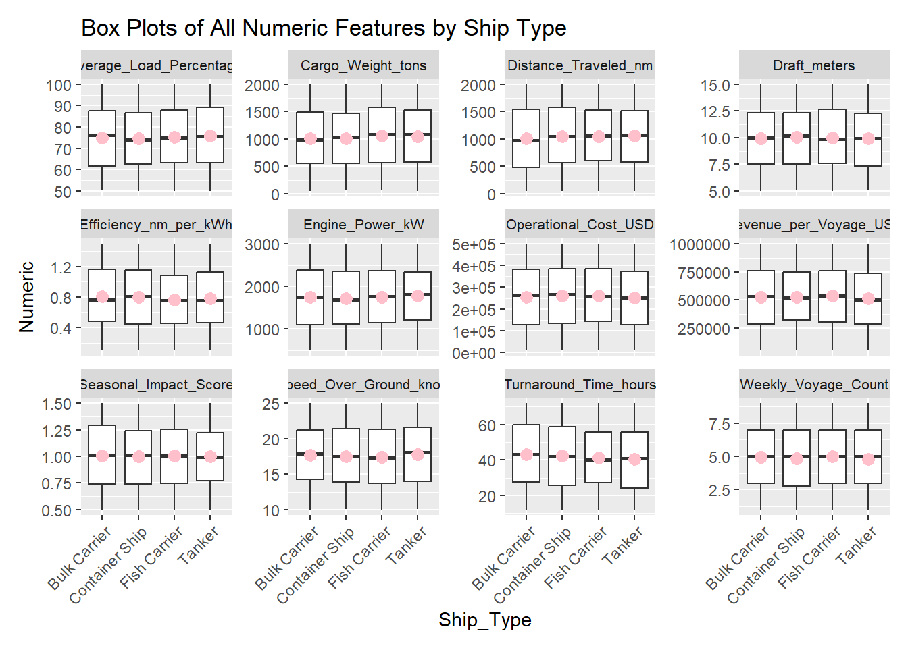
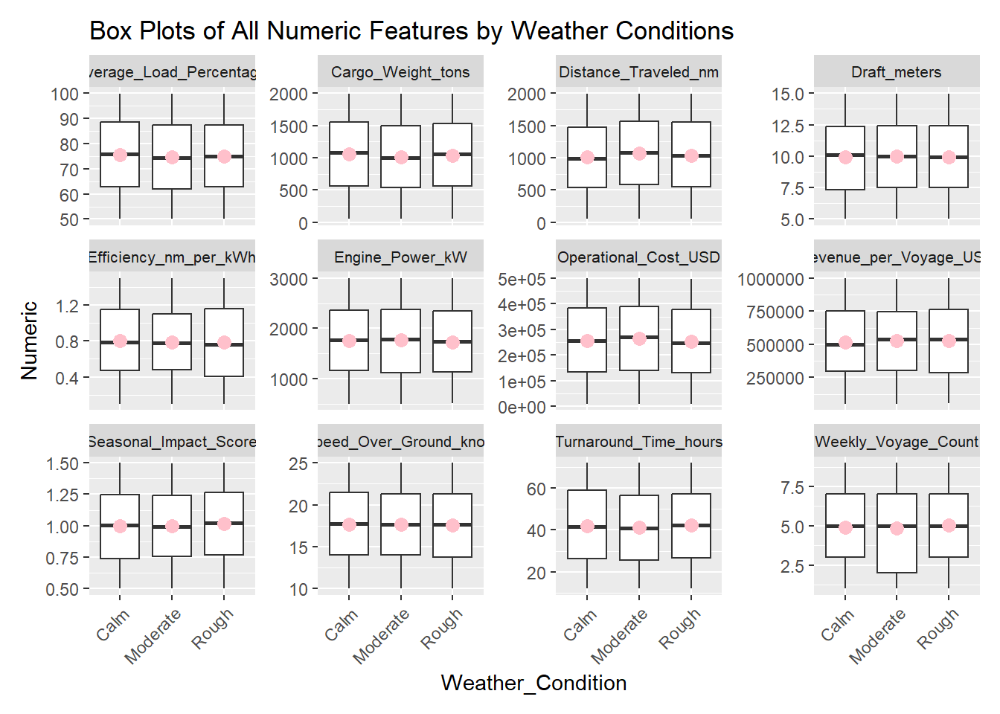

pacman::p_load(dplyr, tidyverse, ggdist, lubridate,
ggthemes, colorspace, ggiraph,
ggtext, gganimate, plotly, readxl,
gifski, gapminder, factoextra, cluster)Take-Home Exercise 1: Ship Performance in the Gulf of Guinea
1 Overview
The Gulf of Guinea is a crucial maritime hub, but ship performance is affected by environmental conditions, security risks, and regulatory factors. Strong currents, high humidity, and piracy also impact navigation, fuel efficiency, and operational costs.
Key metrics such as vessel speed, fuel consumption, turnaround time, and security-related delays play a crucial role in determining shipping efficiency. Analyzing these factors is essential for optimizing operations and enhancing maritime security in the region.
1.1 The Task
For this week’s article, we will be using various data visualisation techniques to explore the different factors affecting ship performance in the Gulf of Guinea.
1.2 The Dataset
The ship performance dataset (Kaggle) contains data on essential operational metrics and characteristics of different ship types operating in the Gulf of Guinea.
The raw dataset consists of 2,736 rows and 18 columns, with some of the key features below:
Numerical Features
Speed_Over_Ground_knots: Average speed of the ship over water (in knots).
Engine_Power_kW: Engine power output (in kilowatts).
Distance_Traveled_nm: Total distance traveled by the ship (in nautical miles).
Operational_Cost_USD: Total operational cost per voyage (in USD).
Revenue_per_Voyage_USD: Revenue generated per voyage (in USD).
Efficiency_nm_per_kWh: Energy efficiency calculated in nautical miles per kilowatt-hour.
Categorical Features
Ship_Type: Type of ship (e.g., Tanker, Container Ship, Fish Carrier, Bulk Carrier).
Route_Type: Shipping route type (e.g., Short-haul, Long-haul, Transoceanic).
Engine_Type: Type of engine (e.g., Diesel, Heavy Fuel Oil).
Maintenance_Status: Maintenance condition of the ship (e.g., Fair, Critical, Good).
Weather_Condition: Prevailing weather conditions during voyages (e.g., Calm, Moderate, Rough).
2 Loading R packages and data
2.1 Loading R packages
üìå The following code chunk is used to install necessary packages for this article:
2.2 Import Data
üìå Importing the csv data file and mutating categorical data to factors:
cols <- c("Ship_Type", "Route_Type", "Engine_Type","Maintenance_Status","Weather_Condition")
ship_data <- read_csv("data/Ship_Performance_Dataset.csv") %>%
mutate(across(cols, as.factor))Rows: 2736 Columns: 18
── Column specification ────────────────────────────────────────────────────────
Delimiter: ","
chr (5): Ship_Type, Route_Type, Engine_Type, Maintenance_Status, Weather_C...
dbl (12): Speed_Over_Ground_knots, Engine_Power_kW, Distance_Traveled_nm, D...
date (1): Date
ℹ Use `spec()` to retrieve the full column specification for this data.
ℹ Specify the column types or set `show_col_types = FALSE` to quiet this message.Warning: There was 1 warning in `mutate()`.
ℹ In argument: `across(cols, as.factor)`.
Caused by warning:
! Using an external vector in selections was deprecated in tidyselect 1.1.0.
ℹ Please use `all_of()` or `any_of()` instead.
# Was:
data %>% select(cols)
# Now:
data %>% select(all_of(cols))
See <https://tidyselect.r-lib.org/reference/faq-external-vector.html>.3 Data Preparation
Before conducting exploratory data analysis, we must first gain a deeper understanding of the dataset and perform essential data preparation steps, including:
Verifying all data types,
Identifying duplicate records, and
Checking for missing values.
3.1 Verify Data Types
üìå Code chunk to verify that all data types in the dataset is correct:
Code
glimpse(ship_data)Rows: 2,736
Columns: 18
$ Date <date> 2023-06-04, 2023-06-11, 2023-06-18, 2023-06-2…
$ Ship_Type <fct> Container Ship, Fish Carrier, Container Ship, …
$ Route_Type <fct> None, Short-haul, Long-haul, Transoceanic, Tra…
$ Engine_Type <fct> Heavy Fuel Oil (HFO), Steam Turbine, Diesel, S…
$ Maintenance_Status <fct> Critical, Good, Fair, Fair, Fair, Fair, Critic…
$ Speed_Over_Ground_knots <dbl> 12.59756, 10.38758, 20.74975, 21.05510, 13.742…
$ Engine_Power_kW <dbl> 2062.9840, 1796.0574, 1648.5567, 915.2618, 108…
$ Distance_Traveled_nm <dbl> 1030.9436, 1060.4864, 658.8741, 1126.8225, 144…
$ Draft_meters <dbl> 14.132284, 14.653083, 7.199261, 11.789063, 9.7…
$ Weather_Condition <fct> Moderate, Rough, Moderate, Moderate, Moderate,…
$ Cargo_Weight_tons <dbl> 1959.0179, 162.3947, 178.0409, 1737.3853, 260.…
$ Operational_Cost_USD <dbl> 483832.35, 483388.00, 448543.40, 261349.61, 28…
$ Revenue_per_Voyage_USD <dbl> 292183.27, 883765.79, 394018.75, 87551.38, 676…
$ Turnaround_Time_hours <dbl> 25.86708, 63.24820, 49.41815, 22.40911, 64.158…
$ Efficiency_nm_per_kWh <dbl> 1.4551789, 0.2903614, 0.4995945, 0.7029057, 1.…
$ Seasonal_Impact_Score <dbl> 1.4156533, 0.8856478, 1.4058132, 1.3707043, 0.…
$ Weekly_Voyage_Count <dbl> 1, 6, 9, 1, 8, 7, 3, 6, 8, 2, 9, 4, 3, 7, 7, 3…
$ Average_Load_Percentage <dbl> 93.76925, 93.89537, 96.21824, 66.19370, 80.008‚Ķüìå To further understand the categorical features and values used for each feature, the following code chunk is used to list out the unique values for each categorical column:
Code
categorical_cols <- ship_data %>%
select(where(~is.factor(.)))
# Show unique values for each categorical column
unique_vals <- categorical_cols %>%
map(~ unique(.))
print(unique_vals)$Ship_Type
[1] Container Ship Fish Carrier Bulk Carrier None Tanker
Levels: Bulk Carrier Container Ship Fish Carrier None Tanker
$Route_Type
[1] None Short-haul Long-haul Transoceanic Coastal
Levels: Coastal Long-haul None Short-haul Transoceanic
$Engine_Type
[1] Heavy Fuel Oil (HFO) Steam Turbine Diesel
[4] None
Levels: Diesel Heavy Fuel Oil (HFO) None Steam Turbine
$Maintenance_Status
[1] Critical Good Fair None
Levels: Critical Fair Good None
$Weather_Condition
[1] Moderate Rough Calm None
Levels: Calm Moderate None Rough
To Note
As observed, all the categorical columns have unique value stated as “None” which can be interpreted as a missing value in the data.
This will need to be addressed in 3.3 Check for missing values.
3.2 Identify duplicate records
Code
duplicate <- ship_data %>%
group_by_all() %>%
filter(n()>1) %>%
ungroup()
duplicate# A tibble: 0 × 18
# ℹ 18 variables: Date <date>, Ship_Type <fct>, Route_Type <fct>,
# Engine_Type <fct>, Maintenance_Status <fct>, Speed_Over_Ground_knots <dbl>,
# Engine_Power_kW <dbl>, Distance_Traveled_nm <dbl>, Draft_meters <dbl>,
# Weather_Condition <fct>, Cargo_Weight_tons <dbl>,
# Operational_Cost_USD <dbl>, Revenue_per_Voyage_USD <dbl>,
# Turnaround_Time_hours <dbl>, Efficiency_nm_per_kWh <dbl>,
# Seasonal_Impact_Score <dbl>, Weekly_Voyage_Count <dbl>, …
Note
- No duplicate records identified.
3.3 Check for missing values
Code
missing_data <- is.na(ship_data)
# Filter rows where there is at least one TRUE (missing value)
missing_row <- ship_data[apply(missing_data, 1, any), ]
print(missing_row)# A tibble: 0 × 18
# ℹ 18 variables: Date <date>, Ship_Type <fct>, Route_Type <fct>,
# Engine_Type <fct>, Maintenance_Status <fct>, Speed_Over_Ground_knots <dbl>,
# Engine_Power_kW <dbl>, Distance_Traveled_nm <dbl>, Draft_meters <dbl>,
# Weather_Condition <fct>, Cargo_Weight_tons <dbl>,
# Operational_Cost_USD <dbl>, Revenue_per_Voyage_USD <dbl>,
# Turnaround_Time_hours <dbl>, Efficiency_nm_per_kWh <dbl>,
# Seasonal_Impact_Score <dbl>, Weekly_Voyage_Count <dbl>, …
Note
No missing values identified.
However, data wrangling required to exclude categorical features that have “None” indicated. Following code chunks are used to identify records that have “None” indicated in any one of the categorical features and to filter them out from the clean dataset for analysis.
Code
none_vals <- ship_data %>%
filter(if_any(where(is.factor), ~ . == "None"))
print(none_vals)# A tibble: 609 × 18
Date Ship_Type Route_Type Engine_Type Maintenance_Status
<date> <fct> <fct> <fct> <fct>
1 2023-06-04 Container Ship None Heavy Fuel Oil (HFO) Critical
2 2023-07-30 None Coastal Heavy Fuel Oil (HFO) Good
3 2023-09-17 Tanker Long-haul None Good
4 2023-10-22 Container Ship None Diesel Critical
5 2023-10-29 Bulk Carrier Short-haul Diesel None
6 2023-11-05 None Coastal Heavy Fuel Oil (HFO) Good
7 2023-11-19 None Coastal Diesel Good
8 2023-12-03 None Coastal Heavy Fuel Oil (HFO) Critical
9 2024-01-14 Bulk Carrier None Heavy Fuel Oil (HFO) Critical
10 2024-03-24 Tanker None Steam Turbine Critical
# ℹ 599 more rows
# ℹ 13 more variables: Speed_Over_Ground_knots <dbl>, Engine_Power_kW <dbl>,
# Distance_Traveled_nm <dbl>, Draft_meters <dbl>, Weather_Condition <fct>,
# Cargo_Weight_tons <dbl>, Operational_Cost_USD <dbl>,
# Revenue_per_Voyage_USD <dbl>, Turnaround_Time_hours <dbl>,
# Efficiency_nm_per_kWh <dbl>, Seasonal_Impact_Score <dbl>,
# Weekly_Voyage_Count <dbl>, Average_Load_Percentage <dbl>Code
ship_data_clean <- ship_data %>%
filter(!if_any(where(is.factor), ~ . == "None"))
glimpse(ship_data_clean)Rows: 2,127
Columns: 18
$ Date <date> 2023-06-11, 2023-06-18, 2023-06-25, 2023-07-0…
$ Ship_Type <fct> Fish Carrier, Container Ship, Bulk Carrier, Fi…
$ Route_Type <fct> Short-haul, Long-haul, Transoceanic, Transocea…
$ Engine_Type <fct> Steam Turbine, Diesel, Steam Turbine, Diesel, …
$ Maintenance_Status <fct> Good, Fair, Fair, Fair, Fair, Critical, Critic…
$ Speed_Over_Ground_knots <dbl> 10.38758, 20.74975, 21.05510, 13.74278, 18.616…
$ Engine_Power_kW <dbl> 1796.0574, 1648.5567, 915.2618, 1089.7218, 217…
$ Distance_Traveled_nm <dbl> 1060.4864, 658.8741, 1126.8225, 1445.2812, 723…
$ Draft_meters <dbl> 14.653083, 7.199261, 11.789063, 9.727833, 14.9…
$ Weather_Condition <fct> Rough, Moderate, Moderate, Moderate, Rough, Ro…
$ Cargo_Weight_tons <dbl> 162.3947, 178.0409, 1737.3853, 260.5951, 1912.…
$ Operational_Cost_USD <dbl> 483388.00, 448543.40, 261349.61, 287718.38, 18…
$ Revenue_per_Voyage_USD <dbl> 883765.79, 394018.75, 87551.38, 676121.46, 776…
$ Turnaround_Time_hours <dbl> 63.24820, 49.41815, 22.40911, 64.15823, 47.476…
$ Efficiency_nm_per_kWh <dbl> 0.2903614, 0.4995945, 0.7029057, 1.3313431, 1.…
$ Seasonal_Impact_Score <dbl> 0.8856478, 1.4058132, 1.3707043, 0.5833834, 1.…
$ Weekly_Voyage_Count <dbl> 6, 9, 1, 8, 7, 3, 6, 2, 9, 4, 3, 7, 7, 2, 4, 3…
$ Average_Load_Percentage <dbl> 93.89537, 96.21824, 66.19370, 80.00858, 53.174…
Observations
After cleaning up the data and excluding records where categorical data has “None” indicated, the clean dataset consists of 2,127 rows and 18 columns.
With this, we can proceed to our Exploratory Data Analysis (EDA).
4 Exploratory Data Analysis (EDA)
4.1 Univariate: Frequency Counts for all features
For EDA, we firstly run a distribution analysis across all the categorical and numerical features to understand the representation of each feature.
- Use of
geom_bar()andgeom_histogram()to look at the distribution of data across all categorical features. - Use of
facet_wrap()to view multiple plots in a grid - particularly useful for visualizing how a certain feature behaves across different subsets of the data.
Code
# Select categorical columns
cat_cols <- c("Ship_Type", "Route_Type", "Engine_Type", "Maintenance_Status", "Weather_Condition")
# Pivot data to long format
ship_data_categorical <- ship_data_clean %>%
select(all_of(cat_cols)) %>%
pivot_longer(cols = everything(), names_to = "variable", values_to = "category")
# Plot faceted bar charts
ggplot(ship_data_categorical, aes(x = category, fill = variable)) +
geom_bar(color = "black") +
geom_text(stat = "count", aes(label = after_stat(count)), hjust = -0.2, size = 2.5) +
coord_flip(clip = "off", expand = FALSE) +
facet_wrap(~variable, scales = "free_y") +
theme_minimal(base_size = 10) +
scale_fill_brewer(palette = "Set3") +
labs(title = "Distribution of Categorical Features",
x = "Category",
y = "Count") +
theme(legend.position = "none",
plot.title = element_text(face = "bold", hjust = 0.5, size = 10))
Code
# Pivot data to long format
ship_data_numeric <- ship_data_clean %>%
pivot_longer(cols = where(is.numeric),
names_to = "Feature",
values_to = "Numeric")
# Plot faceted histograms
ggplot(ship_data_numeric, aes(x = Numeric, fill = Feature)) +
geom_histogram(color = "black", bins = 30, alpha = 0.7) +
facet_wrap(~Feature, scales = "free") +
theme_minimal(base_size = 10) +
scale_fill_brewer(palette = "Set3") +
labs(title = "Distribution of Numeric Features",
x = "Value",
y = "Frequency") +
theme(legend.position = "none",
strip.text = element_text(size = 10),
plot.title = element_text(face = "bold", size = 10, hjust = 0.5),
plot.margin = margin(10, 10, 10, 10))
Observations
- Data observed is generally evenly distributed. Each categorical and numerical feature is evenly represented.
- Generally no significant outliers observed from the dataset.
4.2 Visualizing Correlation Matrix of Numeric Features
Next, we move on to understanding relationships between the numeric features in the dataset. This is to identify if any of the features influence one another.
To understand this, we will make use of a correlation matrix to measure the strength of the relationship between two features. This is visualized using ggcormat() of the ggstatsplot package.
Code
scaled_cols <- scale(ship_data_clean[, c(6:9, 11:18)])
scaled_cols <- as.data.frame(scaled_cols)
ship_data_scale <- cbind(ship_data_clean[, -c(6:9, 11:18)], scaled_cols)
ship_data_scale <- as.data.frame(ship_data_scale)Code
ggstatsplot::ggcorrmat(
data = ship_data_scale,
cor.vars = c(6:9, 11:18),
ggcorrplot.args = list(outline.color = "black",
hc.order = TRUE,
tl.cex = 10),
title = "Correlation Matrix for Ship Performance",
subtitle = "All pairs: no significant at p < 0.05"
)
Observations
Features do not have strong linear relationships with each other.
None of the correlations between these features are statistically significant at the p < 0.05 level, possibly due to over-scaling / normalization of the data.
Other types of non-linear relationships (i.e. clustering) should be considered.
4.3 Bivariate: Factors affecting Numeric Features
Code
# Boxplot with facets
ggplot(data = ship_data_numeric,
aes(y = Numeric, x = Ship_Type)) + # x maps to Ship_Type
geom_boxplot(outlier.shape = 16,
outlier.colour = "blue",
outlier.size = 1) +
geom_point(stat="summary",
fun="mean",
colour="pink",
size=3) +
labs(title = "Box Plots of All Numeric Features by Ship Type") +
facet_wrap(~Feature, scales = "free_y") +
theme(
axis.text.x = element_text(angle = 45, hjust = 1),
strip.text = element_text(size = 8, lineheight = 1.1),
plot.margin = margin(10, 10, 10, 10),
panel.spacing = unit(0.5, "lines")
)
Code
# Boxplot with facets
ggplot(data = ship_data_numeric,
aes(y = Numeric, x = Route_Type)) + # x maps to Route Type
geom_boxplot(outlier.shape = 16,
outlier.colour = "blue",
outlier.size = 1) +
geom_point(stat="summary",
fun="mean",
colour="pink",
size=3) +
labs(title = "Box Plots of All Numeric Features by Route Type") +
facet_wrap(~Feature, scales = "free_y") +
theme(
axis.text.x = element_text(angle = 45, hjust = 1),
strip.text = element_text(size = 8, lineheight = 1.1),
plot.margin = margin(10, 10, 10, 10),
panel.spacing = unit(0.5, "lines")
)Code
# Boxplot with facets
ggplot(data = ship_data_numeric,
aes(y = Numeric, x = Engine_Type)) + # x maps to Engine_Type
geom_boxplot(outlier.shape = 16,
outlier.colour = "blue",
outlier.size = 1) +
geom_point(stat="summary",
fun="mean",
colour="pink",
size=3) +
labs(title = "Box Plots of All Numeric Features by Engine Type") +
facet_wrap(~Feature, scales = "free_y") +
theme(
axis.text.x = element_text(angle = 45, hjust = 1),
strip.text = element_text(size = 8, lineheight = 1.1),
plot.margin = margin(10, 10, 10, 10),
panel.spacing = unit(0.5, "lines")
)Code
# Boxplot with facets
ggplot(data = ship_data_numeric,
aes(y = Numeric, x = Maintenance_Status)) + # x maps to Maintenance Status
geom_boxplot(outlier.shape = 16,
outlier.colour = "blue",
outlier.size = 1) +
geom_point(stat="summary",
fun="mean",
colour="pink",
size=3) +
labs(title = "Box Plots of All Numeric Features by Maintenance Status") +
facet_wrap(~Feature, scales = "free_y") +
theme(
axis.text.x = element_text(angle = 45, hjust = 1),
strip.text = element_text(size = 8, lineheight = 1.1),
plot.margin = margin(10, 10, 10, 10),
panel.spacing = unit(0.5, "lines")
)
Code
# Boxplot with facets
ggplot(data = ship_data_numeric,
aes(y = Numeric, x = Weather_Condition)) + # x maps to Weather Conditions
geom_boxplot(outlier.shape = 16,
outlier.colour = "blue",
outlier.size = 1) +
geom_point(stat="summary",
fun="mean",
colour="pink",
size=3) +
labs(title = "Box Plots of All Numeric Features by Weather Conditions") +
facet_wrap(~Feature, scales = "free_y") +
theme(
axis.text.x = element_text(angle = 45, hjust = 1),
strip.text = element_text(size = 8, lineheight = 1.1),
plot.margin = margin(10, 10, 10, 10),
panel.spacing = unit(0.5, "lines")
)
Observations
Looking at the box plots for all 5 categorical features, the influence of categorical features on the numerical features (i.e. revenue, cost, turnaround time etc.) is minimal.
There are no significant trends identified from the plots that compares averages across the categorical features.
Next, we will try to identify if there is any time trends on key numerical features (i.e. revenue, cost and fuel efficiency).
4.4 Time Trend of Fuel Efficiency, Average Revenue and Average Cost
Code
# Extract Year-Month
ship_data_Timetrend <- ship_data_clean %>%
mutate(Year_Month = as.Date(format(Date, "%Y-%m-01"))) %>%
group_by(Year_Month, Engine_Type) %>%
summarise(Average_Efficiency = mean(Efficiency_nm_per_kWh, na.rm = TRUE), .groups = "drop")
# Average Efficiency over time
plot_efficiency <-plot_ly(data = ship_data_Timetrend,
x = ~Year_Month,
y = ~Average_Efficiency,
color = ~Engine_Type,
type = 'scatter',
mode = 'lines+markers')
# Apply layout for the Efficiency plot
plot_efficiency <- plot_efficiency %>%
layout(title = "Fuel Efficiency Over Time",
font = list(size = 16, family = "Arial"),
xaxis = list(title = "Year-Month", titlefont = list(size = 14, family = "Arial")),
yaxis = list(title = "Efficiency (nm / kWh)", titlefont = list(size = 14, family = "Arial")),
plot_bgcolor = "#f9f9f9", # Background color
paper_bgcolor = "#ffffff", # Paper background color
font = list(family = "Arial", size = 14, color = "#333333"), # General font style
showlegend = TRUE,
legend = list(title = list(text = 'Engine Type')),
margin = list(l = 60, r = 60, t = 60, b = 60), # Adjust margins
hovermode = "closest", # Improve hover interaction
hoverlabel = list(bgcolor = "white", font = list(color = "black"))) # Hover label styling
plot_efficiency
Observations
In general, ships operating on Steam Turbine are the most fuel efficient among all 3 engine types.
However, the plots suggest a certain level of seasonal/time trend, which can be indicative of the impact of other features on fuel efficiency as well.
Code
# Extract Year-Month
ship_data_Timetrend1 <- ship_data_clean %>%
mutate(Year_Month = as.Date(format(Date, "%Y-%m-01"))) %>%
group_by(Year_Month, Route_Type) %>%
summarise(Average_Revenue = mean(Revenue_per_Voyage_USD, na.rm = TRUE),
Average_Cost = mean(Operational_Cost_USD, na.rm = TRUE),.groups = "drop")
# Average Revenue over time
plot_revenue <- plot_ly(data = ship_data_Timetrend1,
x = ~Year_Month,
y = ~Average_Revenue,
color = ~Route_Type,
type = 'scatter',
mode = 'lines+markers')
# Apply layout for the revenue plot
plot_revenue <- plot_revenue %>%
layout(title = "Average Revenue Over Time",
font = list(size = 16, family = "Arial"),
xaxis = list(title = "Year-Month", titlefont = list(size = 14, family = "Arial")),
yaxis = list(title = "Average Revenue (USD)", titlefont = list(size = 14, family = "Arial")),
plot_bgcolor = "#f9f9f9", # Background color
paper_bgcolor = "#ffffff", # Paper background color
font = list(family = "Arial", size = 14, color = "#333333"), # General font style
showlegend = TRUE,
legend = list(title = list(text = 'Route Type')),
margin = list(l = 60, r = 60, t = 60, b = 60), # Adjust margins
hovermode = "closest", # Improve hover interaction
hoverlabel = list(bgcolor = "white", font = list(color = "black"))) # Hover label styling
plot_revenue
Observations
Seasonal trend is observed, especially for Long-haul and Short-haul routes:
Long-haul: Average revenue peaked in the months of August and March
Short-haul: Average revenue peaked in the month of January
However, this showed be analysed in tandem with the seasonal trend for operational cost and profit can be maximized only if operational costs are kept low.
Code
# Average Cost over time
plot_cost <- plot_ly(data = ship_data_Timetrend1,
x = ~Year_Month,
y = ~Average_Cost,
color = ~Route_Type,
type = 'scatter',
mode = 'lines+markers')
# Apply layout for the cost plot
plot_cost <- plot_cost %>%
layout(title = "Average Cost Over Time",
font = list(size = 16, family = "Arial"),
xaxis = list(title = "Year-Month", titlefont = list(size = 14, family = "Arial")),
yaxis = list(title = "Average Cost (USD)", titlefont = list(size = 14, family = "Arial")),
plot_bgcolor = "#f9f9f9", # Background color
paper_bgcolor = "#ffffff", # Paper background color
font = list(family = "Arial", size = 14, color = "#333333"), # General font style
showlegend = TRUE,
legend = list(title = list(text = 'Route Type')),
margin = list(l = 60, r = 60, t = 60, b = 60), # Adjust margins
hovermode = "closest", # Improve hover interaction
hoverlabel = list(bgcolor = "white", font = list(color = "black"))) # Hover label styling
plot_cost
Observations
Seasonal trend is also observed, but it differs slightly from the trend in revenue:
Long-haul: Average cost peaked in the months of October and March. Cost in August is kept relatively low, even though revenues were high, possibly due to other factors like use of more fuel efficient ships to keep cost down.
Short-haul & Transoceanic: Average cost generally higher among the 4 route types and have erratic trends. Not recommended as they do not maximize profits.
4.5 K-Means Clustering
As the features have been previously identified to not have any linear correlation to each other (see 4.2 Visualizing Correlation Matrix of Numeric Features), we will attempt to group the data using K-means clustering to see if there is any non-linear relationship.
K-means clustering uses distance metrics to identify clusters where points are close together in a multi-dimensional space.
4.5.1 Elbow Method
The Elbow Method is used to determine the optimal number of clusters (K) in K-Means clustering. To determine the optimal number of clusters, look for the point where the within-cluster sum of squares (WCSS) stops decreasing sharply and starts to level off.
With this ship performance dataset, optimal number of clusters is 2.
Code
fviz_nbclust(scaled_cols, kmeans, method = "wss") +
ggtitle("Elbow Method for Choosing k")Warning: did not converge in 10 iterations4.5.2 Visualising K-means Clustering
Code
optimal_k <- 2
kmeans_result <- kmeans(scaled_cols, centers = optimal_k, nstart = 25)
fviz_cluster(kmeans_result, data = scaled_cols,
ellipse.type = "norm", geom = "point",
main = paste("K-Means Clustering (k =", optimal_k, ")"))# Calculate silhouette score
silhouette_scores <- silhouette(kmeans_result$cluster, dist(scaled_cols))
avg_silhouette_score <- mean(silhouette_scores[, 3])
# Print the silhouette object
print(avg_silhouette_score)[1] 0.06443715
Observations
Based on the above K-means clustering chart, there appears to be significant overlaps and no clear separation between clusters.
Possible reasons for overlapping clusters:
Data used for ship performance may not naturally be clustered and actual data distribution may follow a different structure.
The features may not have good differentiation and feature engineering may be required.
Wrong choice of K.
From the silhouette score of 0.0644 (~ to 0), quality of clustering result is not good and further work can be done with different clustering algorithms.
5 Summary
In conclusion, the analysis of ship performance data revealed several key insights into operational efficiency and data distribution:
- Feature analysis showed an equal distribution across all features, ensuring balanced representation in the dataset.
- There was no significant correlation between features.
- Bivariate analysis suggested that categorical features such as ship type, engine type and route type had minimal impact on efficiency and profits. This suggests the need for a more comprehensive multivariate analysis to assess potential interactions and combined effects on performance metrics.
- K-Means clustering did not produce meaningful groupings, suggesting the lack of well-separated clusters in the dataset.
Future work include looking into multivariate analysis to discover any combined effects on ship performance, feature engineering to create more meaningful features and exploring time-series modelling like ARIMA.